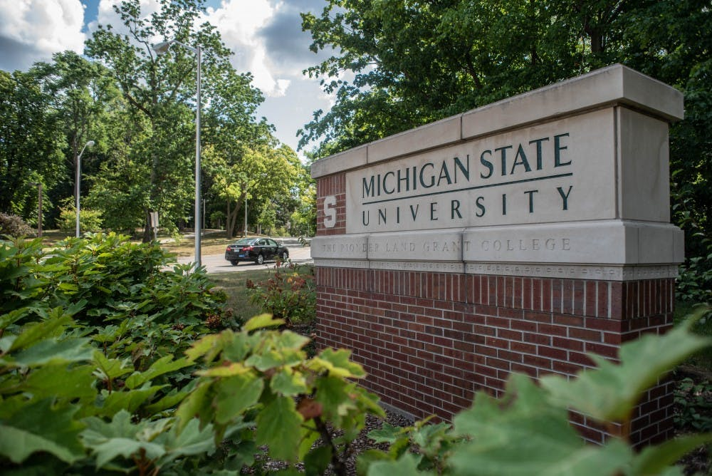
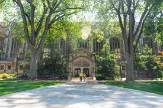

Portfolio Education
My education journey has started at Macomb Community College. I spent a year there and got all A's and was able to transfer to MSU. While at MSU I had the intention of pursuing a CS degree. I even took credits at the Lansing Community College. I finally felt ready to apply to my dream school UofM. The BSI degree really drew my attention and I was extremley excited when I got accepted. I am blessed with the the oppurtunities that I have had. Now in my senior year I have enjoyed school so much that I have plans on pursuing a masters degree.